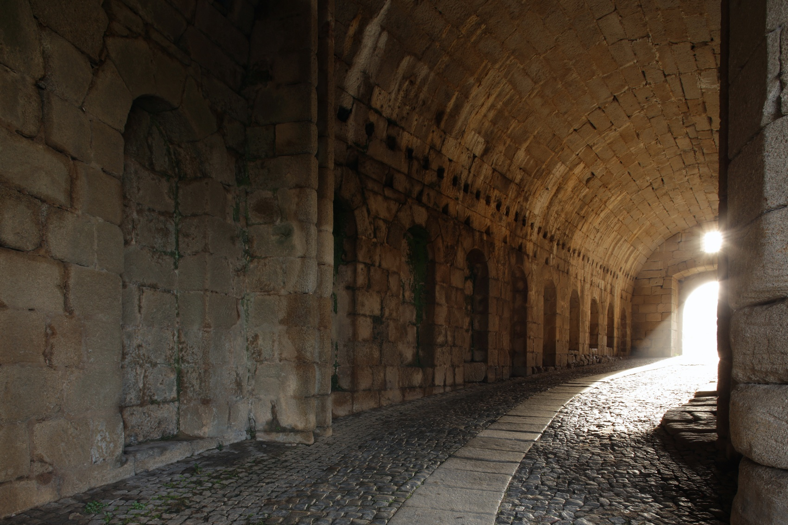
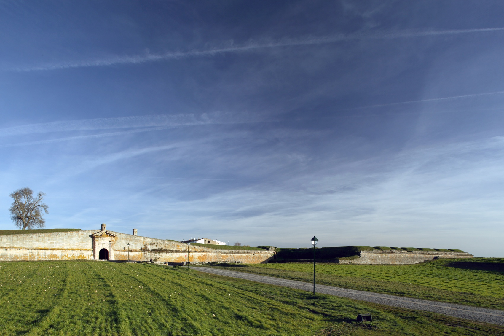

Almeida, perante a necessidade de modernizar as obsoletas estruturas medievais, empenhou-se após a Restauração na construção de uma renovada máquina de guerra adaptada às novas armas de fogo, permitindo-lhe selar a fronteira. A Praça-forte é de planta hexagonal, com seis baluartes e o mesmo número de revelins.
Almeida tem origem provável na migração dos habitantes de um castro lusitano, ocupado em 61 a.C. pelos Romanos e posteriormente pelos povos bárbaros. Denominada Al-Mêda pelos Árabes devido à sua localização em planalto, foi depois tomada definitivamente pelos Cristãos em 1190, passando à posse portuguesa com o Tratado de Alcanizes (1297).
Recebeu foral de D. Dinis e foral novo de D. Manuel. Com o tempo, o núcleo medieval cresceu e sofreu destruições durante as invasões francesas e as lutas liberais, sendo reconstruída a partir de 1853. Em 1927, a vila perdeu sua atividade militar secular.
Há várias opções de hospedagem em Almeida, que permitem vivenciar a rica história local.
Os restaurantes locais servem pratos típicos da região, permitindo uma imersão na gastronomia da Beira.